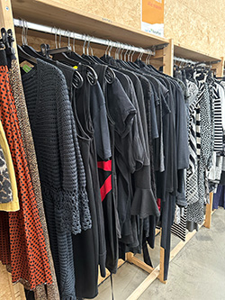

2de hands kleding winkelen is eigenlijk altijd al in geweest, want het is goedkoper dan nieuwe kleding halen en als je graag duurzaam bezig wilt zijn dan is het natuurlijk ook de goede optie. Want er wordt dan geen kleding vernietigd en wordt het herbruikt.
Tegenwoordig wordt kleding van alle merken 2de hands verkocht, denk bijvoorbeeld aan dure merkkleding. Mensen willen graag merkkleding maar de prijzen daarvan zijn aan de dure kant, dan is 2de hand winkelen natuurlijk ook een goede optie. Als je goed zoekt kan je 2de handse merkkleding vinden voor een redelijke prijs. Maar je hebt natuurlijk ook kledingstukken die niet meer worden gemaakt, dan is 2de hands kopen vaak ook de enige oplossing.